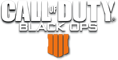

Call of Duty is the world's best-selling combat video game franchise. Beginning with its first entry in 2003, most Call of Duty games are first-person shooters that allow players to immerse themselves as soldiers in wartime scenarios.
This wiki documents all of the games in the franchise, including:
MW3
AW
WW2
BO4
Let's do this -Gaz
Call to action! It's time! Sign up to Call Of Duty Wiki by pressing the button.